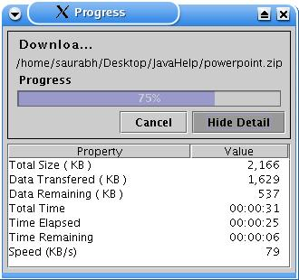

How to download Folder(s)/Documents?
In Folder/Document List of remote browser select the folder/document you would like to download.
You can select multiple folders/documents.
Navigate to the folder in the local browser where you would like to download the selected items
Click on the 'Download' icon [ ] or select from menu Remote->Download to start download.
Progress bar appears to show progress while downloading.
Press 'Cancel' to abort downloading.
Press 'Detail…' to view the details of download such as Total Size, Data Transferred, Data Remaining, Total time, TimePress 'Detail…' to view the details of download such as Total Size, Data Transferred, Data Remaining, Total time, Time Elapsed, Time Remaining, speed.

After the completion of download local browser is refreshed to view the downloaded contents.
Unable to download:Broken connection with remote server.
Insufficient access to create new folders/documents on the local system.